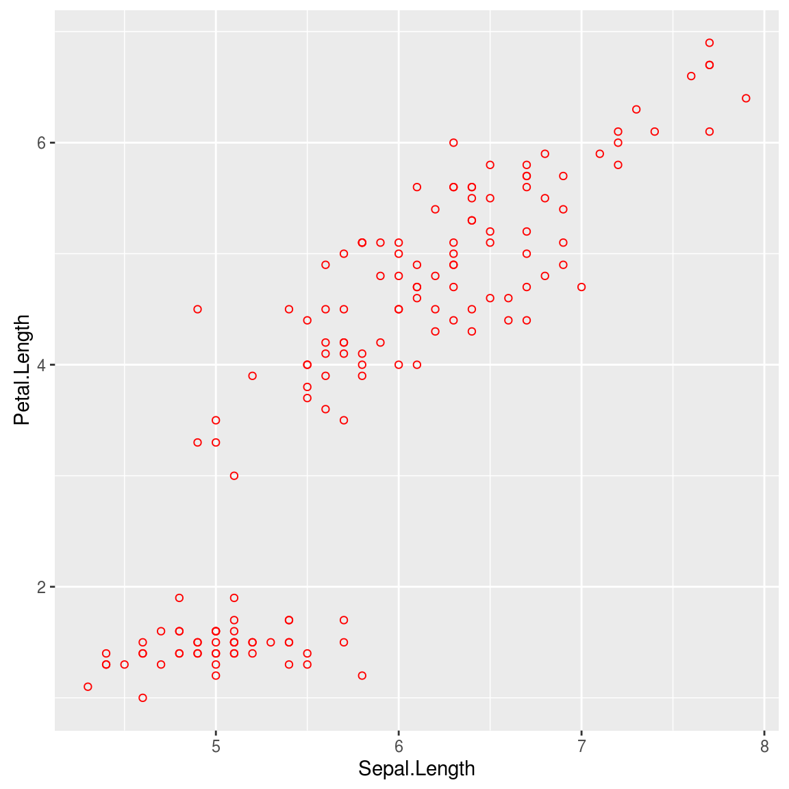
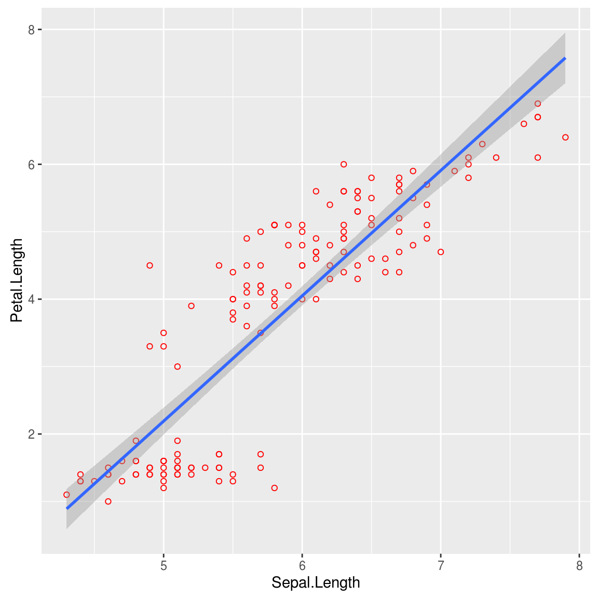
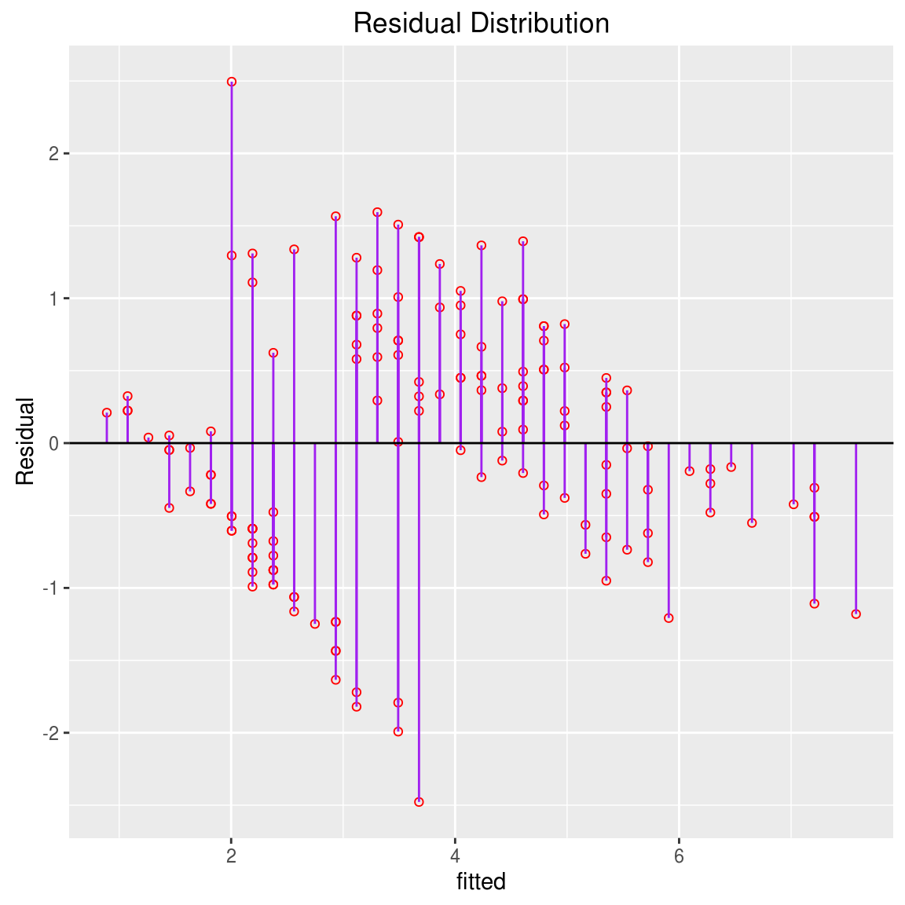
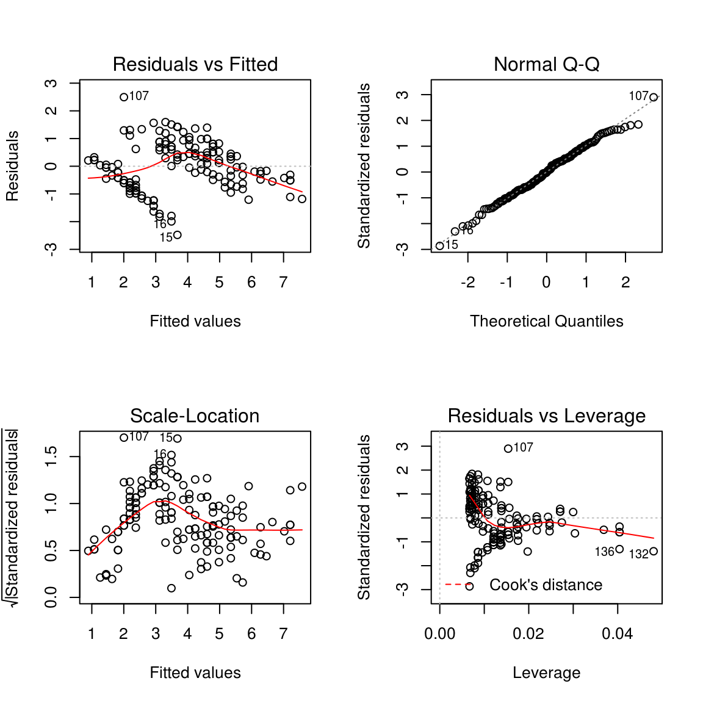
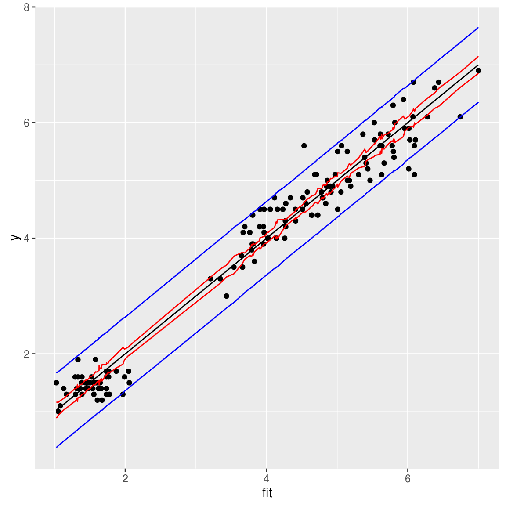

9 线性回归
9.1 Simple Linear Regression
Many shall be restored that now are fallen;
Many shall be fallen that now are in honor.
相关性是简单线性回归它爹，回归的概念来自于Francis Galton，他发现高个子男人生出来的儿子会比自己矮，而矮个子男人生出来的儿子会比自己高，并称这种现象为回归平庸(regression toward mediocrity)，现在被称之为回归均值(regression to the mean)，Galton有个学生叫Karl Pearson，他给出了相关性和回归的数学公式，这也是相关系数被命名为Pearson相关系数的原因，而相关系数的符号r则取自于回归(regression)一词。
简单线性回归名副其实，非常简单，在假定X和Y是线性关系，使用单变量X来预测Y。
\[ Y \approx \beta_0 + \beta_1 X \]
假设我们要用花萼长度来预测花瓣长度，
require(ggplot2)
data(iris)
attach(iris)## The following objects are masked from iris (pos = 3):
##
## Petal.Length, Petal.Width, Sepal.Length, Sepal.Width, Speciesp <- ggplot(iris, aes(Sepal.Length, Petal.Length))+
geom_point(shape=1, color="red")
print(p) 我们需要拟合： \[ Petal \approx \beta_0 + \beta_1 Sepal \]
\(\beta_0\) 和 \(\beta_1\) 代表线性模型的截距和斜率，这两个模型参数是未知的，需要通过训练数据估计 \(\hat{\beta_0}\) 和 \(\hat{\beta_1}\) 。
使得直线 \[ \hat{y} = \hat{\beta_0} + \hat{\beta_1} x \] 与数据集中的点最接近，有多种方法来来计算“接近度“，最常用的是最小二乘法(least squares)。
最小二乘法通过计算残差平方和（RSS, residual sum of squares） \[ RSS = {e_1}^2 + {e_2}^2 + … + {e_n}^2 \] 其中 \(e_i = y_i - \hat{y_i}\) . 问题转换为找出 \(\hat{\beta_0}\) 和 \(\hat{\beta_1}\) 使得RSS的值最小。 通过计算，可以得到： \[ \hat{\beta_1} = \frac{\sum_{i=1}^n (x_i - \bar{x})(y_i - \bar{y})}{\sum_{i=1}^n (x_i - \bar{x})^2} = r_{xy} (\frac{s_y}{s_x})\] \[ \hat{\beta_0} = \bar{y} - \hat{\beta_1}\bar{x} \]
b1 <- sum((Petal.Length-mean(Petal.Length)) * (Sepal.Length-mean(Sepal.Length)))/sum((Sepal.Length-mean(Sepal.Length))^2)
b0 <- mean(Petal.Length) - b1 * mean(Sepal.Length)
cat("Intersect:\t", b0, "\n", "Slope:\t", b1, "\n")## Intersect: -7.101443
## Slope: 1.858433stats包中的lm()函数，用于拟合线性模型。
model <- lm(Petal.Length ~ Sepal.Length, data=iris)
model##
## Call:
## lm(formula = Petal.Length ~ Sepal.Length, data = iris)
##
## Coefficients:
## (Intercept) Sepal.Length
## -7.101 1.8589.1.1 评估参数准确性
打个比方，我们使用样本均值 \(\hat{\mu}\) 来估计总体均值 \(\mu\) ，对于任意一个样本的 \(\hat{\mu}\) 值，有可能会高估 \(\mu\) ，也有可能会低估，需要量化到底 \(\hat{\mu}\) 偏离 \(\mu\) 有多远，这个问题通过计算standard error of \(\hat{\mu}\) 来解决。
同样地，我们估计出来的参数 \(\hat{\beta_0}\) 和 \(\hat{\beta_1}\) 和真实的参数到底偏离多远，需要通过计算参数的standard error来估计。 \[ SE(\hat{\beta_0})^2 = \sigma^2 [\frac{1}{n} + \frac{\bar{x}^2}{\sum_{i=1}^n (x_i-\bar{x})^2}] \] \[ SE(\hat{\beta_1})^2 = \frac{\sigma^2}{\sum_{i=1}^n (x_i-\bar{x})^2} \]
其中 \(\sigma^2 = Var(\epsilon)\) ，通常情况下是未知的，使用残差标准误 \(RSE=\sqrt{RSS/(n-2)}\) 来估计。
p+geom_smooth(method="lm", se=TRUE, level=0.95) 上图中，阴影部分就是参数的95%置信区间。
有了标准误，还可以用统计检验来检测X和Y是否具有相关性。 在这里，可以使用t检验，计算t统计量： \[ t = \frac{\hat{\beta_1} - 0}{SE(\hat{\beta_1})} \]
这些统计量，lm()函数都会计算。
summary(model)##
## Call:
## lm(formula = Petal.Length ~ Sepal.Length, data = iris)
##
## Residuals:
## Min 1Q Median 3Q Max
## -2.47747 -0.59072 -0.00668 0.60484 2.49512
##
## Coefficients:
## Estimate Std. Error t value Pr(>|t|)
## (Intercept) -7.10144 0.50666 -14.02 <2e-16 ***
## Sepal.Length 1.85843 0.08586 21.65 <2e-16 ***
## ---
## Signif. codes: 0 '***' 0.001 '**' 0.01 '*' 0.05 '.' 0.1 ' ' 1
##
## Residual standard error: 0.8678 on 148 degrees of freedom
## Multiple R-squared: 0.76, Adjusted R-squared: 0.7583
## F-statistic: 468.6 on 1 and 148 DF, p-value: < 2.2e-169.1.2 评估模型准确性
9.1.2.1 残差标准误(RSE, residual standard error)
iris$fitted <- predict(model)
p %+% iris + aes(x=fitted, y=Petal.Length-fitted) + geom_linerange(aes(ymin = 0, ymax = Petal.Length - fitted), colour = "purple") + geom_hline(aes(yintercept = 0)) + ggtitle("Residual Distribution")+ylab("Residual")
RSE是Y值和回归直线偏离值均值： \[ RSE = \sqrt{\frac{RSS}{n-2}} = \sqrt{\frac{\sum_{i=1}^n (y_i-\hat{y_i})^2}{n-2}} \]
rse <- with(iris, sqrt(sum((fitted - Petal.Length)^2)/(length(Petal.Length)-2)))
print(rse)## [1] 0.8678147通过RSE，可以计算模型预测值和真实值平均水平偏离多少。偏离量大不大，可以用 \(RSE/\bar{y}\) 来估计。
with(iris, rse/mean(Petal.Length))## [1] 0.2309246RSE度量的是失拟（lack of fit），如果RSE很小，则 \(\hat{y_i}\) 和 \(y_i\) 很接近，模型对数据的拟合非常好，如果RSE很大，则表明模型对数据的拟合很差。
9.1.2.2 \(R^2\) 统计量
RSE是绝对值，不够清晰，用 \(RSE/\bar{y}\) 相对值会好一些。 \(R^2\) 提供另外一种度量方式: \[ R^2 = \frac{TSS - RSS}{TSS} = 1 - \frac{RSS}{TSS}\]
其中 \(TSS=\sum(y_i - \bar{y})^2\) ,TSS度量Y的方差，也就是拟合前总的方差；而RSS度量的是残差的方差，也就是拟合后无法解释的方差；TSS-RSS度量的是能够由拟合模型解释的方差；继而， \(R^2\) 统计量度量的是Y的方差能由X来解释的比例。
\(R^2\) 接近1，表明回归能解释Y的方差，回归模型拟合得好。而接近0的话，则表明无法解释Y的大部分方差，拟合模型很差，甚至可能是错的。
tss <- with(iris, sum((Petal.Length - mean(Petal.Length))^2))
rss <- with(iris, sum((fitted-Petal.Length)^2))
rr <- 1 - rss/tss
rr## [1] 0.7599546\(R^2\) 统计量度量的是X和Y的线性相关性，我们知道相关系数r定义为： \[ Cor(X, Y) = \frac{\sum_{i=1}^n (x_i - \bar{x}) (y_i - \bar{y})}{\sqrt{\sum_{i=1}^n (x_i - \bar{x})^2)}\sqrt{\sum_{i=1}^n (y_i - \bar{y})^2)}}\]
同样我们可以用相关系数r来评估模型，事实上 \(R^2 = r^2\) ，可以说 \(R^2\) 是 \(r^2\) 的通用形式，相关系数只能用于单变量，如果要用多变量做线性回归的话，就没法用，从这个角度来看，也可以说 \(R^2\) 是 \(r^2\) 的扩展形式。
9.1.3 方差分析
如前所述，Y的方差TSS，由两部分组成，残差方差(RSS)和回归方差(TSS-RSS)，继而我们可以进行方差分析，TSS的自由度是n-1, 回归方差是1(简单线性回归是单变量),残差方差的自由度是n-2 （TSS的df - 回归方差df），将方差除以自由度，得到平均方差。
如果不存在线性关系，那么回归平均方差和残差平均方差大致相等。可以使用F统计量来检验是否存在线性关系。 \[ F = \frac{regression\; mean\; square}{residual\; mean\; square} = \frac{TSS-RSS}{RSS/(n-2)}\]
F统计量服从1和n-2自由度的F分析，继而可以计算出p值，当然可以直接扔给anova函数，进行统计计算。
n <- nrow(iris)
fstat <- (tss-rss)/(rss/(n-2))
print(fstat)## [1] 468.5502pf(fstat, 1, n-2, lower.tail=F)## [1] 1.038667e-47anova(model)## Analysis of Variance Table
##
## Response: Petal.Length
## Df Sum Sq Mean Sq F value Pr(>F)
## Sepal.Length 1 352.87 352.87 468.55 < 2.2e-16 ***
## Residuals 148 111.46 0.75
## ---
## Signif. codes: 0 '***' 0.001 '**' 0.01 '*' 0.05 '.' 0.1 ' ' 19.1.4 可视化辅助诊断模型
评估模型最重要的指标是残差，R提供了函数可视化残差，残差 vs 拟合值, 残差开方 vs 拟合值, 残差的QQ图，标准化残差 vs Leverage, leverage度量的是数据点对回归线的影响。
par(mfrow=c(2,2))
plot(model)
9.2 Multiple Linear Regression
在简单线性回归中，我们使用花萼长度来预测花瓣长度，在iris数据集里，还有花萼宽度、花瓣宽度的数据，如果我们想探索花萼宽度和花瓣宽度与花瓣长度的关系，可以分别做简单线性回归，这样子每一个简单线性回归，都忽略了其它两个因素的影响。事实上，一个现象常常与多个因素相联系，由多个变量组合共同来预测因变量，会更加有效。
多元线性回归模型和简单线性回归一样，每个变量需要一个斜率参数： \[ Y = \beta_0 + \beta_1 X_1 + \beta_2 X_2 + \cdot\cdot\cdot + \beta_p X_p + \epsilon \]
假设这里有p个变量， \(X_j\) 代表第j个变量， \(\beta_j\) 代表 \(X_j\) 每升高一个单位对Y的平均影响。
真实的参数是未知的，我们需要估计 \(\hat{\beta}_0,\hat{\beta}_1,...,\hat{\beta}_p\) 来估计回归参数 \(\beta_0,\beta_1,...,\beta_p\) ，于是回归模型就变成：
\[ \hat{y} = \hat{\beta}_0 + \hat{\beta}_1 x_1 + \hat{\beta}_2 x_2 + \cdot\cdot\cdot + \hat{\beta}_p x_p\]
参数估计依然使用最小二乘法，找出参数 \(\hat{\beta}_0,\hat{\beta}_1,...,\hat{\beta}_p\) 使得RSS最小。 \[ RSS= \sum_{i=1}^n (y_i - \hat{y}_i)^2 \\ = \sum_{i=1}^n (y_i - \hat{\beta}_0 - \hat{\beta}_1 x_1 - \hat{\beta}_2 x_2 - \cdot\cdot\cdot - \hat{\beta}_p x_p)^2 \]
从数值计算上看，这是个优化问题，使用矩阵运算还是比较容易的，具体请戳这里。
在R里，依然可以使用lm函数来做多元线性回归：
data(iris)
lm.fit <- lm(Petal.Length ~ Petal.Width+Sepal.Length+Sepal.Width, data=iris)
lm.fit##
## Call:
## lm(formula = Petal.Length ~ Petal.Width + Sepal.Length + Sepal.Width,
## data = iris)
##
## Coefficients:
## (Intercept) Petal.Width Sepal.Length Sepal.Width
## -0.2627 1.4468 0.7291 -0.64609.2.1 相关问题
进行多元线性回归，我们需要回答以下一些重要的问题： + X和Y是否存在关系? + 所有自变量都有助于解释Y吗？或者说是否只有一部分自变量对Y的预测是有用的？ + 模型对数据的拟合有多好？ + 预测的准确性有多好？
9.2.1.1 X和Y是否存在关系?
对于这个问题，可以使用在简单线性回归中提到的RSE和 \(R^2\) 来评估。
## TSS
tss <- with(iris, sum((Petal.Length - mean(Petal.Length))^2))## if calculate prediction values manually, use the following command:
## b <- lm.fit$coefficients
## iris$"(Intercept)" <- 1
## d <- as.matrix(iris[, names(b)])
## iris$fitted <- d %*% as.matrix(b, ncol=1)## RSS
iris$fitted <- predict(lm.fit)
rss <- with(iris, sum((fitted-Petal.Length)^2))
b <- lm.fit$coefficients
p <- length(b) - 1
n <- nrow(iris)
df <- n - p -1
## RSE
rse <- sqrt( rss/df )
print(rse)## [1] 0.3189554## R-squared
rr <- 1 - rss/tss
print(rr)## [1] 0.9680118\(R^2\) 是很高的，证明X和Y确实是存在关系的。 另一方面，可以做统计检验，如果X和Y没有关系，那么参数 \(\beta_1 = \beta_2 = \cdot\cdot\cdot = \beta_p = 0\) ，我们可以检验零假设： \[ H_{0}: \beta_1 = \beta_2 =... = \beta_p = 0\] \[H_{a}: at\; least\; one\; \beta_j\; is\; non-zero.\]
这个假设检验通过计算F统计量： \[ F = \frac{(TSS-RSS)/p}{RSS/(n-p-1)}\]
其中 \(TSS=\sum(y_i - \bar{y})^2\) 而 \(RSS=\sum(y_i - \hat{y}_i)^2\) ，如果线性模型是正确的，那么： \[E\{RSS/(n-p-1)\} = \sigma^2\] 如果 \(H_0\) 是对的，则 \[E\{(TSS - RSS)/p\} = \sigma^2\]
因此如果 \(H_0\) 是对的，那么F统计量的值因为接近于1，如果 \(H_a\) 是对的，则 \(E\{(TSS - RSS)/p\} > \sigma^2\) ，F统计量要大于1。
## F-statistic
fstat <- ((tss-rss)/p) / (rss/df)
print(fstat)## [1] 1472.726F统计量服从F分布，可以根据F分布来计算p值，以决定是否reject \(H_0\) 。
pf(fstat, p, n-p-1, lower.tail=F)## [1] 6.976868e-109上面计算的这些统计量，lm函数都有计算。
summary(lm.fit)##
## Call:
## lm(formula = Petal.Length ~ Petal.Width + Sepal.Length + Sepal.Width,
## data = iris)
##
## Residuals:
## Min 1Q Median 3Q Max
## -0.99333 -0.17656 -0.01004 0.18558 1.06909
##
## Coefficients:
## Estimate Std. Error t value Pr(>|t|)
## (Intercept) -0.26271 0.29741 -0.883 0.379
## Petal.Width 1.44679 0.06761 21.399 <2e-16 ***
## Sepal.Length 0.72914 0.05832 12.502 <2e-16 ***
## Sepal.Width -0.64601 0.06850 -9.431 <2e-16 ***
## ---
## Signif. codes: 0 '***' 0.001 '**' 0.01 '*' 0.05 '.' 0.1 ' ' 1
##
## Residual standard error: 0.319 on 146 degrees of freedom
## Multiple R-squared: 0.968, Adjusted R-squared: 0.9674
## F-statistic: 1473 on 3 and 146 DF, p-value: < 2.2e-16而且还对每个变量计算了p值，这些p值给出了每一个 \(x_j\) 和y是否相关的信息。
9.2.1.2 变量选择
通过上面输出中每个参数的p值，可以看出每个变量对y的贡献是不一样的，很多情况下，y只和其中某一部分 \(x_j\) 有关，这就涉及到变量选择问题。
针对这个问题有三种方法： + Forward selection：从空模型（只包含截距）开始，对p个变量分别做简单线性回归，对产生最小RSS的变量加入到模型中，继而做两变量拟合，把产生最小RSS的第二个变量，再加入到模型中，不断迭代直到停止条件产生。 + Backward selection：所有变量一起拟合，然后移除p值最大的变量，再对(p-1)个变量重新拟合，再移除最大p值的变量，不断迭代，直到停止条件出现。 + Mixed selection：这是Forward和Backward selection的组合，从空模型开始，按照Forward selection来做，变量一个个地加入，在这个过程中，某些变量的p值是有可能升高的，如果p值高于某个阈值，移除这个变量。不断地进行forward和backward步骤，直到模型中的所有变量p值都足够小，而模型外的变量，如果加入到模型中，会产生比较大的p值。
Backward selection不能应用于 p > n的情况下，而Forward selection则可以，Forward selection是贪婪方法，开始加入的变量到了后面可能变成冗余，而Mixed selection可以弥补这一点。
9.2.1.3 模型拟合
模型对数据的拟合度有多好，可以使用之前计算过的RSE和 \(R^2\) 来评估。 简单线性回归给出的RSE公式，是针对简单线性回归的简化形式，其通过形式为： \[ RSE = \sqrt{\frac{RSS}{n-p-1}} \]
在简单线性回归中 \(R^2\) 是X和Y的相关系数的平方，在多元线性回归中，它等于Y和 \(\hat(Y)\) 的相关系数的平方。事实上拟合后的模型，除了RSS最小之外， \(R^2\) 是最大的。
with(iris, cor(fitted, Petal.Length)^2)## [1] 0.9680118按相关系数计算的 \(R^2\) 和之前使用 \(1 - \frac{RSS}{TSS}\) 计算的是一样的。
9.2.1.4 模型预测
参数预测本身是有误差的，即使我们知道真实的参数，也不可能完美地预测数据，因为模型中包含有随机误差 \(\epsilon\) ，在预测的时候，最好使用置信区间，这样把uncertainty的信息也包括在内。
xx <- predict(lm.fit, se.fit=TRUE, interval="confidence", level=0.95)
xx <- as.data.frame(xx$fit)
xx$y <- iris$Petal.Length
head(xx)## fit lwr upr y
## 1 1.484210 1.393923 1.574497 1.4
## 2 1.661389 1.569631 1.753146 1.4
## 3 1.386358 1.296915 1.475802 1.3
## 4 1.378046 1.284284 1.471808 1.5
## 5 1.346695 1.251095 1.442294 1.4
## 6 1.733905 1.619998 1.847812 1.7mean(with(xx, y> lwr & y < upr))## [1] 0.3266667这个模型的 \(R^2\) 是0.968，拟合得如此好的模型，预测起来，偏差还是有那么些，真实值落在预测的95%置信区间里，只占了35%不到。
yy <- predict(lm.fit, se.fit=TRUE, interval="prediction", level=0.95)$fit## Warning in predict.lm(lm.fit, se.fit = TRUE, interval = "prediction", level = 0.95): predictions on current data refer to _future_ responsescolnames(yy) <- c("fitpred", "lwrpred", "uprpred")
xx <- cbind(xx, yy)
head(xx)## fit lwr upr y fitpred lwrpred uprpred
## 1 1.484210 1.393923 1.574497 1.4 1.484210 0.8474110 2.121009
## 2 1.661389 1.569631 1.753146 1.4 1.661389 1.0243794 2.298398
## 3 1.386358 1.296915 1.475802 1.3 1.386358 0.7496783 2.023038
## 4 1.378046 1.284284 1.471808 1.5 1.378046 0.7407447 2.015347
## 5 1.346695 1.251095 1.442294 1.4 1.346695 0.7091209 1.984269
## 6 1.733905 1.619998 1.847812 1.7 1.733905 1.0933304 2.374480mean(with(xx, y> lwrpred & y < uprpred))## [1] 0.9733333显然用prediction方法，给出的预测值置信区间要靠谱得多。
ggplot(xx, aes(fit, y))+geom_point() + geom_line(aes(y=fit)) + geom_line(aes(y=lwr), color="red") + geom_line(aes(y=upr), color="red") + geom_line(aes(y=lwrpred), color="blue") + geom_line(aes(y=uprpred), color="blue")
9.2.2 数值运算
参考以前的博文 \[ B = (X^TX)^{-1}(X^TY)\]
X=iris[,c("Petal.Width", "Sepal.Length", "Sepal.Width")]
X=as.matrix(X)
X=cbind(x0=1, X)
Y=as.matrix(iris[, "Petal.Length"])
solve(t(X) %*% X) %*% t(X) %*% Y## [,1]
## x0 -0.2627112
## Petal.Width 1.4467934
## Sepal.Length 0.7291384
## Sepal.Width -0.6460124lm.fit##
## Call:
## lm(formula = Petal.Length ~ Petal.Width + Sepal.Length + Sepal.Width,
## data = iris)
##
## Coefficients:
## (Intercept) Petal.Width Sepal.Length Sepal.Width
## -0.2627 1.4468 0.7291 -0.6460按照公式计算出来，和lm.fit的结果是一样的。